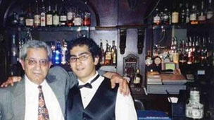

Карабахский коктейль (политический памфлет)
Современная политика никогда не обходится без коктелей. Более того, зачастую именно коктейль определяет вектор политики. Официальные визиты, неформальные встречи, саммиты без галстуков, и многие другие дипломатические рауты предваряются, сопровождаются и продолжаются с непременным атрибутом – бокалом тонизирующего напитка.
В напитках, как и в политике о вкусах не спорят. Скорее им потакают. Кому-то по душе игристо-капризное шампанское из Елисейского Дворца с орденом Почетного Легиона на дне бокала. Другой предпочитает баварское пиво питерского разлива на сочинской фазенде с воспоминаниями о старом «Запорожце». Кто-то жить не может без задиристого молодого грузинского вина из обновленного, более демократического погребка. Я уже не говорю о приверженцах древнего армянского напитка с иностранным названием и зарубежным хозяином. Тут главное уважить правило: что, с кем и как. Вспомните мудрого Хаяма.
Скажем, суперважная персона предпочитает на ужин обычную «маргариту». А в столице полярно противоположного государства ему подсовывают «кровавую Мэри». На какие, спрашивается, итоги в завтрашних переговорах можно расчитывать? Верно: адекватно-кровавые. Лучше не рисковать. И тогда успех обеспечен.
Вы помните одну из первых встреч Главы Крутого Запада с Атаманом Европейского Востока? Я тоже. Особенно знаменитую фразу о том, как легко распознать друга в этом конфликтном мире. Она обошла страницы всех солидных изданий. Весь мир (Чечня, конечно же не в счет) вздохнул с облегчением: вот он - тост мира, дружбы и взаимопонимания. А что последовало вслед за этим? Соверешенно верно: победили мир в Чечне, взаимопонимание в Афганистане и дружба в Ираке.
При этом мало кто знал о содержимом коктейля на званом ужине. А рецепт был чист, как детская слеза: «чеченский синдром, замоченный в сортире». На первый взгляд, дешево и сердито. Зато какой аромат! Сочетание этнически трепетного сепаратизма с дурманяще крепким исламским фундаментализмом, плавно переходящим в международный терроризм. Согласитесь, это уже не просто коктейль, а политическая философия.
Теперь самое время помянуть добрым словом коктейль Карабахский. За последние годы он стал очень популярен на постсовестком пространстве. Авторство на изобретение этого криминального на вкус и этнического на запах напитка оспаривают многие крупные и мелкие политики. От Горбачева до Кочаряна. Одним словом, куча. Правда, не столь могучая, сколь кучерявая. Достоверно лишь одно: коктейль производится в России и активно распространяется на ее западных и южных рубежах.
По свидетельству многих амбициозных политиков разного калибра коктейль здорово расширяет политическое воображение и якобы способен внести значительные изменения в международные отношения. Он помогает по новому взглянуть на исторические процессы, вносить желаемые географические поправки, а главное, при полном отсутствии экономических ресурсов содержать мощную армию. Одним словом, незаменимый элексир для амбициозного политика. С одним лишь недостатком: напиток развивает патологическую несовместимость с соседями.
Любовь к напиткам также разнообразна и непредсказуема в своих последствиях, как и политика. Ваше пристрастие, скажем к польской картофельной водке, может сойти вам с рук повсюду к западу от Варшавы. Но вокруг московского Кремля лучше этим не злоупотреблять: слишком много политических ассосиаций. А с недавних пор там не рекомендуют баловаться винами из Молдовы и Грузии. По причине неблагодарности виноградной лозы. Мой вам совет: будучи в России не гадайте – попробуйте найти «Агдам». Испытанный и пока вполне политически корректный напиток. Но только пока, на период оккупации. А там, как карты лягут.
Кстати, о картах. Нет, я не о крапленых колодах: это уже избито. Имеются ввиду географические и политические. Главная разница между ними – откуда на них смотреть. Взор из Вашингтона и взгляд из Москвы – это далеко не одно и тоже. Скажем, для господина Буша чисто географически Азербайджан расположен очень даже комфортабельно. А для господина Путина - чисто политически? Правильно: не совсем. А если честно, то совсем «не». И знаете почему такой разброс во взглядах? Главным образом, из-за исторической неразборчивости азербайджанских политиков в коктейлях.
Неуемное уважение к русской водке и чрезмерная толерантность к армянскому коньяку в советский период обернулись для местных политиков глубоким похмельем в годы независимости. Из такого похмелья выходить очень сложно. Клинически подтвержденных позитивных примеров полного отрезвления практически нет. В таких губительных случаях теперь уже мало помогает даже известное народное средство – ленкоранский огуречный рассол после финской бани. Ибо огурцы из Ленкорани ныне слишком «тегеранизированы». А финская сауна после многолетней русской парной может опасно повысить артериальное давление. Из того же Кремля. Сочетание, прямо скажем, из разряда гремучих.
Теперь вся надежда на большую трубу, сына Патриарха и импотентную оппозицию. Такой коктейль может сотворить чудо. А я все еще верю в чудеса.
Бейдулла Манафов
16-02-2007
Даллас, Техас
В напитках, как и в политике о вкусах не спорят. Скорее им потакают. Кому-то по душе игристо-капризное шампанское из Елисейского Дворца с орденом Почетного Легиона на дне бокала. Другой предпочитает баварское пиво питерского разлива на сочинской фазенде с воспоминаниями о старом «Запорожце». Кто-то жить не может без задиристого молодого грузинского вина из обновленного, более демократического погребка. Я уже не говорю о приверженцах древнего армянского напитка с иностранным названием и зарубежным хозяином. Тут главное уважить правило: что, с кем и как. Вспомните мудрого Хаяма.
Скажем, суперважная персона предпочитает на ужин обычную «маргариту». А в столице полярно противоположного государства ему подсовывают «кровавую Мэри». На какие, спрашивается, итоги в завтрашних переговорах можно расчитывать? Верно: адекватно-кровавые. Лучше не рисковать. И тогда успех обеспечен.
Вы помните одну из первых встреч Главы Крутого Запада с Атаманом Европейского Востока? Я тоже. Особенно знаменитую фразу о том, как легко распознать друга в этом конфликтном мире. Она обошла страницы всех солидных изданий. Весь мир (Чечня, конечно же не в счет) вздохнул с облегчением: вот он - тост мира, дружбы и взаимопонимания. А что последовало вслед за этим? Соверешенно верно: победили мир в Чечне, взаимопонимание в Афганистане и дружба в Ираке.
При этом мало кто знал о содержимом коктейля на званом ужине. А рецепт был чист, как детская слеза: «чеченский синдром, замоченный в сортире». На первый взгляд, дешево и сердито. Зато какой аромат! Сочетание этнически трепетного сепаратизма с дурманяще крепким исламским фундаментализмом, плавно переходящим в международный терроризм. Согласитесь, это уже не просто коктейль, а политическая философия.
Теперь самое время помянуть добрым словом коктейль Карабахский. За последние годы он стал очень популярен на постсовестком пространстве. Авторство на изобретение этого криминального на вкус и этнического на запах напитка оспаривают многие крупные и мелкие политики. От Горбачева до Кочаряна. Одним словом, куча. Правда, не столь могучая, сколь кучерявая. Достоверно лишь одно: коктейль производится в России и активно распространяется на ее западных и южных рубежах.
По свидетельству многих амбициозных политиков разного калибра коктейль здорово расширяет политическое воображение и якобы способен внести значительные изменения в международные отношения. Он помогает по новому взглянуть на исторические процессы, вносить желаемые географические поправки, а главное, при полном отсутствии экономических ресурсов содержать мощную армию. Одним словом, незаменимый элексир для амбициозного политика. С одним лишь недостатком: напиток развивает патологическую несовместимость с соседями.
Любовь к напиткам также разнообразна и непредсказуема в своих последствиях, как и политика. Ваше пристрастие, скажем к польской картофельной водке, может сойти вам с рук повсюду к западу от Варшавы. Но вокруг московского Кремля лучше этим не злоупотреблять: слишком много политических ассосиаций. А с недавних пор там не рекомендуют баловаться винами из Молдовы и Грузии. По причине неблагодарности виноградной лозы. Мой вам совет: будучи в России не гадайте – попробуйте найти «Агдам». Испытанный и пока вполне политически корректный напиток. Но только пока, на период оккупации. А там, как карты лягут.
Кстати, о картах. Нет, я не о крапленых колодах: это уже избито. Имеются ввиду географические и политические. Главная разница между ними – откуда на них смотреть. Взор из Вашингтона и взгляд из Москвы – это далеко не одно и тоже. Скажем, для господина Буша чисто географически Азербайджан расположен очень даже комфортабельно. А для господина Путина - чисто политически? Правильно: не совсем. А если честно, то совсем «не». И знаете почему такой разброс во взглядах? Главным образом, из-за исторической неразборчивости азербайджанских политиков в коктейлях.
Неуемное уважение к русской водке и чрезмерная толерантность к армянскому коньяку в советский период обернулись для местных политиков глубоким похмельем в годы независимости. Из такого похмелья выходить очень сложно. Клинически подтвержденных позитивных примеров полного отрезвления практически нет. В таких губительных случаях теперь уже мало помогает даже известное народное средство – ленкоранский огуречный рассол после финской бани. Ибо огурцы из Ленкорани ныне слишком «тегеранизированы». А финская сауна после многолетней русской парной может опасно повысить артериальное давление. Из того же Кремля. Сочетание, прямо скажем, из разряда гремучих.
Теперь вся надежда на большую трубу, сына Патриарха и импотентную оппозицию. Такой коктейль может сотворить чудо. А я все еще верю в чудеса.
Бейдулла Манафов
16-02-2007
Даллас, Техас
Кавказский Центр Миротворческих Инициатив

© Ассоциация Текали - info@southcaucasus.com